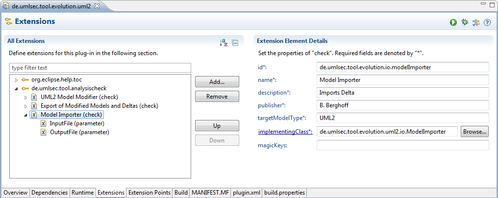
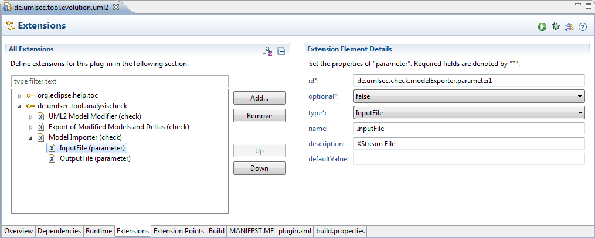
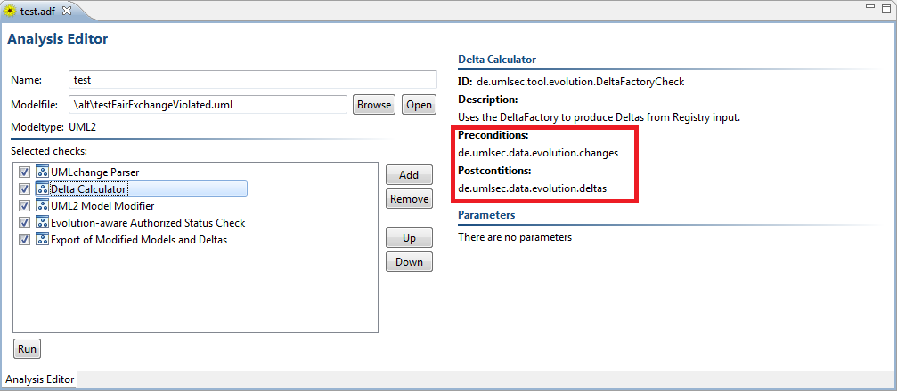

The Check Mechanism
The CARiSMA tool provides a mechanism that allows you to implement multiple checks
in a single Eclipse Plugin. The CARiSMA tool itself is only a host for the checks and
coordinates their execution. The mechanism is shown in Figure 1.

Figure: Overview of the Check Mechanism
Creating a CARiSMA Check can be done
automatically by using an Eclipse Template Project.
CARiSMA checks need to extend the AnalysisCheck extension point and implement the CarismaCheck interface.
In the CARiSMA tool, checks are registered by the CheckRegistry.
To be registered, a plugin containing CARiSMA checks needs to extend the AnalysisCheck extension point.
This extension point lets the check developer define checks (see Figure 2).

Figure 2: Extension Point/Check definition
Each defined check has to be provided with certain meta information about it, which is displayed in the
analysis editor. The information that has to be provided is
- The ID, Name, Description and Publisher of the check
- the Model type to which this check can be applied to
- the Java class implementing this check
Optionally, some magic keys to identify models can be defined.
CARiSMA looks for these keys in the model files.
If any key is found, a set of recommended checks is added to the list of checks in an analysis.
Check parameters are defined using this extension point (see Figure 3).

Figure 3: Extension Point/Check Parameter definition
There are seven parameter types: String, Boolean, Integer, Float, InputFile, OutputFile and Folder,
which declares a folder to store the check output in. Depending on the type, the analysis editor provides appropriate
methods for setting parameter values.
After defining a check and its parameters, the CheckRegistry registers the check with CARiSMA on startup.
The meta information is stored in a CheckDescriptor, while the parameter information is stored in a CheckParameterDescriptor.
Registered checks are available to use in an analysis using the Analysis Editor.
Once an analysis is started, it receives CheckReferences which contain the set parameter values.
A class implementing the CarismaCheck interface has to implement a single method.
boolean perform(Map parameters, AnalysisHost host)
This method is called by CARiSMA when a check is executed. The check's parameters are given in a mapping from the
parameter id to the corresponding parameter.
The given host can be used to access the analysed model, log check results to the AnalysisResultsView or a report
produced by the analysis, and to access the blackboard provided by CARiSMA, which is used for exchanging data between
checks.
CARiSMA Checks can be further described with pre- and postconditions.
While preconditions define which data is necessary for the check to be executed,
postconditions tell CARiSMA of the data the check provides after successful execution.
This mechanism works in tandem with a blackboard which enables inter-check data exchange.
Before the execution of each check in an analysis, CARiSMA verifies that the preconditions imposed
by the check are present in the blackboard. If any precondition is missing,
the analysis stops with an appropriate error.
With postconditions, CARiSMA ensures that the data the check says it provides is present in the blackboard.
If any postcondition is missing, CARiSMA again stops the analysis while producing an error.
Pre- and postconditions can be defined like adding parameters to a check (see Figure 4).
Right-click on a defined CARiSMA check and select New→precondition/postcondition from the menu.
The only thing left to do is setting a value for the required or provided key of the condition.
This value is used by CARiSMA to search in the blackboard.

Figure 4: Defining pre-/postconditions
Defined pre- and postconditions are shown in the Analysis Editor along check parameters (see Figure 5).

Figure 5: Pre-/postconditions
The blackboard can be accessed via the AnalysisHost interface.
putToRegister(String registerName, Object data) throws RegisterInUseException
Stores data in the blackboard if the key isn't already in use.
Object getFromRegister(String registerName) throws RegisterNotInUseException
Retrieves data from the blackboard if the key is in use.
boolean isRegisterInUse(String registerName)
Checks if the register is already in use.
Object removeFromRegister(String registerName) throws RegisterNotInUseException
Removes data from a register with the given key if it is in use.
Checks are provided with various output channels. The Analyzer, the CARiSMA implementation of the AnalysisHost
interface, allows checks to output messages to the AnalysisResultsView.
An AnalysisResultMessage given to the AnalysisHost consists of a StatusType (INFO, WARNING, ERROR) to prefix
messages in the view with an appropriate icon, and the message to print.
Apart from the view, messages can also be sent to be printed with a report. This report can be specifically
generated by using the context menu in the AnalysisResultsView. We recommend using the report for more detailed
messages regarding the check.